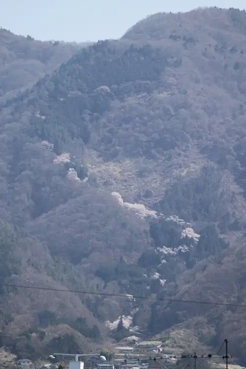
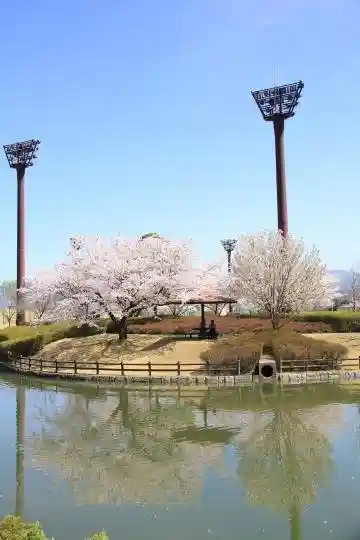
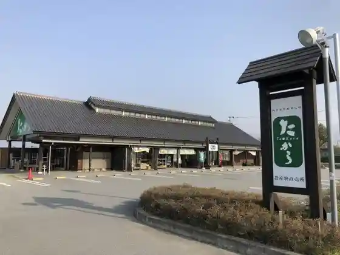

Chuo, Yamanashi
Chuo · Yamanashi
Chuo
Highlighted on the Yamanashi map.

Sights
Yama no Kami Sembonzakura
Chuo Tamaho Furusato Fureai Plaza

Shiki Shinsen Shukaku Plaza (Ta Kara) Nosambutsu Chokubai Tokoro

Chuo · Yamanashi
Chuo
Highlighted on the Yamanashi map.

Yama no Kami Sembonzakura
Chuo Tamaho Furusato Fureai Plaza

Shiki Shinsen Shukaku Plaza (Ta Kara) Nosambutsu Chokubai Tokoro
